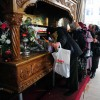

Isus a coborât pentru a doua oară pe pământ într-o zi ploioasă de februarie. A ales România, o ţară mică şi săracă, dar creştină până în măduva oaselor şi credincioasă nevoie mare. Dintr-o inspiraţie de-a dreptul divină, a preferat să nu ni se mai înfăţişeze în chip de copilaş nou-născut. Altfel, probabil şi-ar fi sfârşit misiunea înainte de vreme, sugrumat cu cordonul ombilical, alături de Fecioara intrată în comă pe masa de operaţie. Fără sfânta şpagă, maternităţile zilelor noastre sunt mai periculoase decât grajdul Biblic de acum 2000 de ani.
Primul drum
Duhovniceşte
Fireşte, primul loc în care a păşit Fiul Domnului a fost curtea unei biserici ortodoxe. Era cât pe-aci să fie răsturnat de bolidul unui preot care se grăbea să ajungă la o nuntă cu dar. Ferindu-se la timp din calea limuzinei cu număr de înmatriculare personalizat (RAI, BOR, GOD sau ceva la fel de spiritual), Isus a zăbovit câteva clipe în spatele unui alt slujitor al Domnului care negocia la sânge cu un doi tineri preţul unei înmormântări: în tariful de bază intră doar slujba la biserică şi cădelniţarea coşciugului lângă groapă. Pomelnicul, pomenile şi alte acareturi costă extra.
Creştineşte
Întristat, Isus păşeşte pe uşa sfântului lăcaş, trecând pe lângă o bătrână care murmura aprige blesteme în faţa unei lumânări aprinse. Nu se ştie cine erau destinatarii, însă băbuţa trebuie să fi fost teribil de supărată dacă le ura în surdină: “Dă-le Doamne după sufletul lor, arză-i-ar focul, să moară în chinuri şi eu să mă uşurez pe mormântul lor, cum a zis Mircea Badea pe blog şi la televizor! Îndură-te, Doamne, şi ascultă-mi ruga că sunt femeie credincioasă, ţin toate posturile, beau apă sfinţită în fiecare dimineaţă şi am fost la moaşte în fiecare an. Amin.”
Între timp dinspre altar se auzeau gemete, strigăte şi litanii. Înăuntru, celebrul preot care deschide cartea, vindecă bolnavii cu mătănii şi scoate duhurile rele cu moliftele Sfântului Vasile tocmai practica o exorcizare. Ca în acest videoclip.
Nefiind un fan al producţiilor de gen, Fiul Domnului şi-a întors faţa de la filmul de groază ce i se înfăţişa, pornind-o mâhnit pe calea înapoi spre Ceruri. România mai are de aşteptat până să-L merite.
Creştini şi evlavioşi
Trăim în ţara în care primul-ministru propune împuşcarea adversarilor politici şi în care creştinul Gigi Becali îşi flutură crucea de aur prin Parlament, ameninţând cu “focul ghenei” (de gunoi, după pronunţia deputatului USL) pe judecătorii care l-au condamnat. Trăim în ţara în care un popă beat criţă coboară toţi sfinţii din calendar pentru că este pus să sufle în fiolă după ce a provocat un accident de maşină soldat cu mai mulţi răniţi şi în care vrăjitoarele apar la televizor să ne dea sfaturi despre legarea şi dezlegarea cununiilor.
Într-o astfel de ţară, cu asemenea popor, n-ar fi de mirare ca Judecata de Apoi să se amâne. Din lipsă de cvorum.


{kind=link}
{kind=link}
{kind=link}
Mântuirea costă!
Comments on this entry are closed.